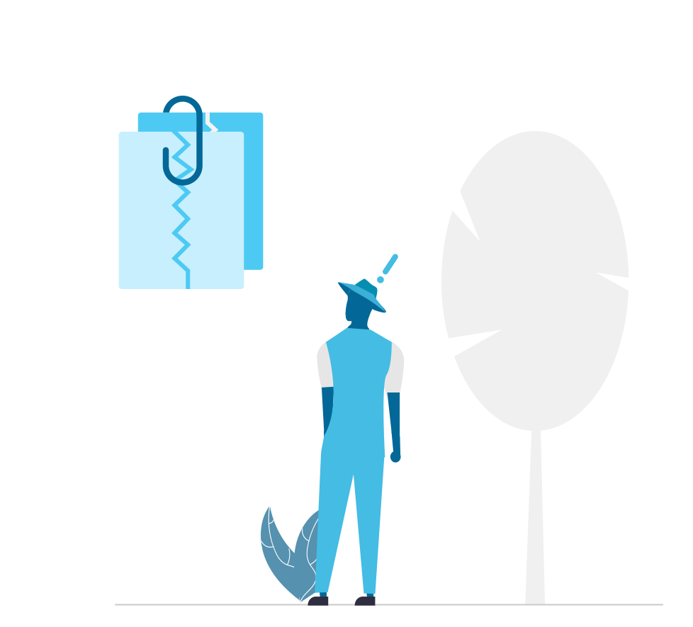

| {{'claim.claim' | translate }} | {{ activeClaimTab === 'mine'? ('claim.assignedTo' | translate): ('claim.assignedBy' | translate) }} | {{'stocks.id' | translate }} | {{'transactions.product' | translate }} | {{'claim.statusText' | translate }} | |
|---|---|---|---|---|---|
| {{element.claim.name}} |
|
{{element.batch_number}} | {{element.product.name}} |
|
|
